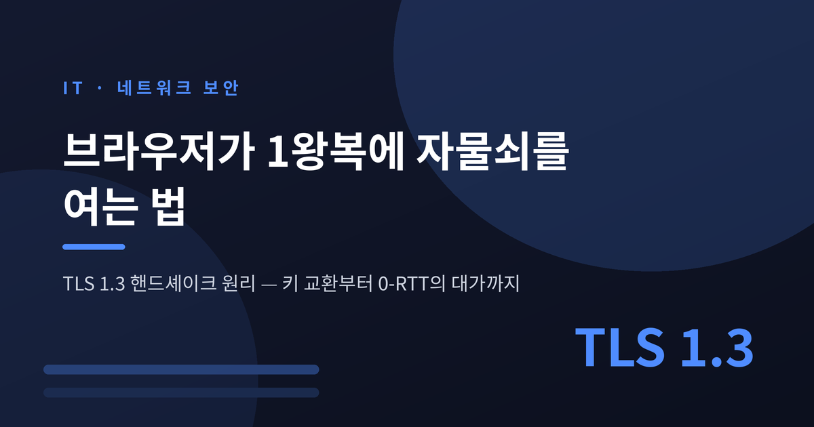
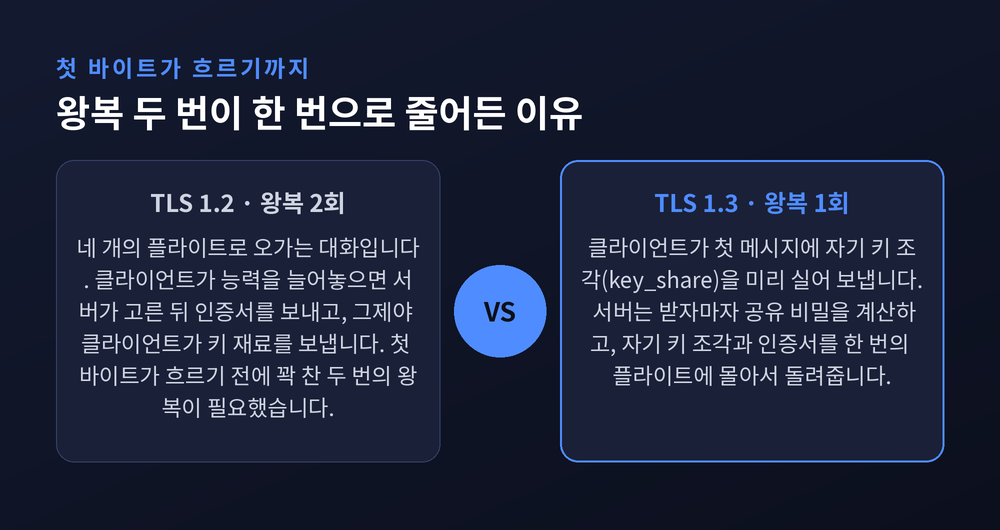
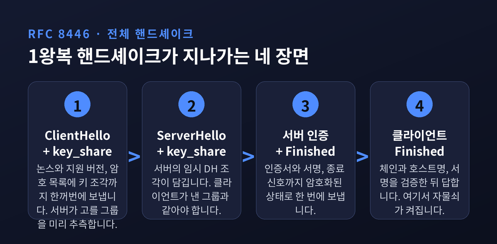
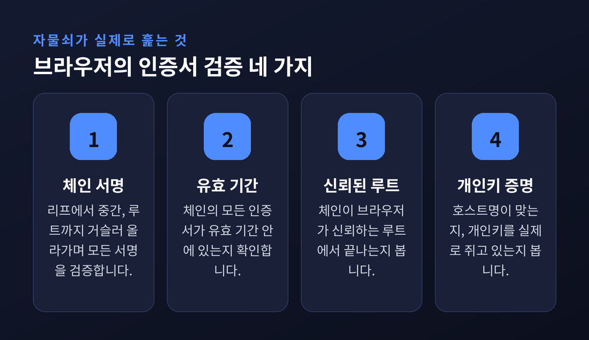
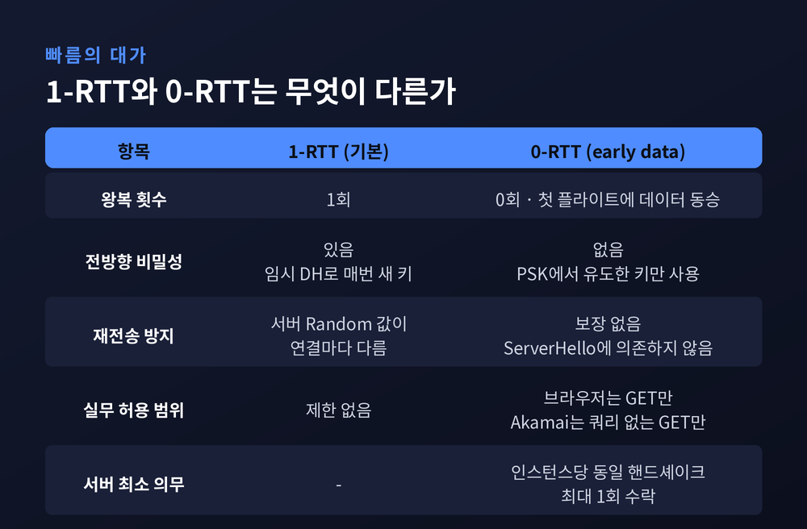
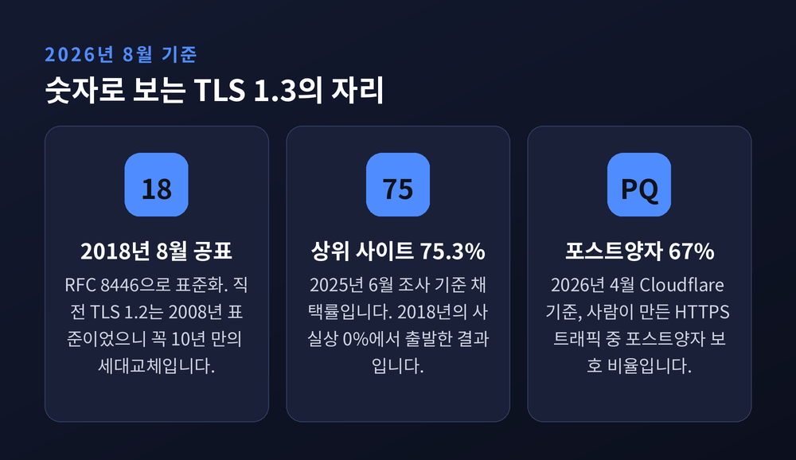

TLS 1.3 핸드셰이크 원리 — 브라우저가 1왕복에 자물쇠를 여는 법

이번 글에서는 브라우저 주소창의 자물쇠가 켜지기 직전 0.1초 사이에 무슨 일이 벌어지는지 정리해 보겠습니다.
TLS 1.3 핸드셰이크의 메시지 순서, 키 교환 방식, 인증서 검증 절차, 그리고 0-RTT의 위험까지 차례로 살펴봅니다.
세 줄 요약
- TLS 1.3 핸드셰이크는 왕복 두 번이 아니라 한 번으로 끝납니다. 클라이언트가 첫 메시지에 열쇠 조각을 미리 실어 보내기 때문입니다.
- 키 교환은 임시 Diffie-Hellman(ECDHE)만 남았습니다. 서버 개인키가 나중에 털려도 과거 통신은 풀리지 않습니다.
- 0-RTT는 왕복을 0으로 줄이지만 재전송(replay)에 취약합니다. 그래서 실무에서는 GET 요청에만 제한적으로 씁니다.
자물쇠 하나가 보증하는 것은 네 가지입니다
TLS 핸드셰이크는 TLS 세션을 여는 절차입니다.
양쪽이 서로를 확인하고, 쓸 암호 알고리즘을 정하고, 세션 키에 합의하는 과정입니다.
이 짧은 대화가 실제로 끝내는 일은 네 가지입니다.
사용할 TLS 버전을 정하고, 암호 스위트를 고르고, 서버의 공개키와 인증기관 서명으로 서버 신원을 인증하고, 이후 대칭 암호화에 쓸 세션 키를 만듭니다.
순서상 TLS 핸드셰이크는 TCP 핸드셰이크가 끝난 뒤에 시작됩니다.
주소창에 HTTPS 주소를 넣는 순간에만 일어나는 것도 아닙니다. API 호출도, DNS over HTTPS 질의도 같은 절차를 밟습니다.
왜 이렇게 번거로운 앞단계가 필요한지는 연산 비용을 보면 납득이 됩니다.
공개키 암호는 연산 한 번에 마이크로초에서 밀리초가 듭니다. 대칭키 암호는 나노초 단위입니다.
그래서 TLS는 비싼 공개키 연산을 딱 한 번만 하고, 그 결과로 얻은 대칭키로 나머지 데이터를 전부 처리합니다.
TLS 1.3 개선 작업의 상당 부분이 바로 이 "비싼 한 번"을 줄이는 데 쓰였습니다.
예전엔 두 번, 지금은 한 번
TLS 1.2의 핸드셰이크는 네 개의 플라이트로 이뤄진 대화였습니다.
클라이언트가 자기 능력을 늘어놓고, 서버가 그중 하나를 골라 인증서와 함께 보내고, 클라이언트가 키 재료를 보내며 확인하고, 서버가 다시 확인합니다.
페이지의 첫 바이트가 흐르기 전에 꽉 찬 두 번의 왕복이 필요했습니다.
TLS 1.3은 이것을 한 번으로 줄였습니다.
방법은 의외로 단순합니다. 클라이언트가 첫 메시지에 자기 키 조각을 미리 실어 보냅니다.
정확히 말하면 클라이언트는 서버가 어떤 키 교환 그룹을 선호할지 "추측"해서 넣습니다.
과감해 보이지만 실제로는 거의 틀리지 않습니다. 선택지가 대폭 줄어든 데다, 현실에서는 사실상 모두 x25519 곡선을 쓰기 때문입니다.
덕분에 서버는 받자마자 공유 비밀을 계산할 수 있고, 자기 키 조각과 인증서를 한 번의 플라이트에 몰아서 보냅니다.
절감되는 시간은 회선에 비례합니다.
데이터센터 내부처럼 왕복 지연이 작으면 몇 밀리초에 그칩니다. 고지연 회선에서는 100~200밀리초까지 줄어든다는 측정도 있습니다.
왕복 한 번이 통째로 사라지는 구조이니, 절감량은 그 회선의 왕복 시간 한 번분이라고 이해하는 편이 정확합니다.

한 판을 순서대로 따라가 봅니다
RFC 8446이 정의한 전체 핸드셰이크는 세 단계로 나뉩니다.
첫째, 키 교환 단계입니다.
클라이언트가 ClientHello를 보냅니다. 여기에는 무작위 논스, 지원하는 프로토콜 버전, 대칭 암호와 해시 쌍의 목록, 그리고 앞서 말한 key_share 확장이 담깁니다.
서버는 ServerHello로 답합니다. 여기에 서버의 임시 Diffie-Hellman 조각이 들어갑니다. 규격은 서버의 조각이 클라이언트가 제시한 그룹 중 하나와 반드시 같은 그룹이어야 한다고 못박고 있습니다.
ClientHello와 ServerHello의 조합이 공유 키를 결정합니다.
RFC의 표현을 그대로 옮기면 이렇습니다. "이 단계 이후의 모든 것은 암호화된다."
둘째, 서버 파라미터 단계입니다.
EncryptedExtensions 메시지가 여기서 등장합니다. TLS 1.3에서 새로 만든 메시지입니다.
예전에 ServerHello에 평문으로 실려 나가던 확장들을, 이제는 이 메시지 안에 넣어 기밀성 보호를 받게 했습니다.
셋째, 인증 단계입니다.
Certificate 메시지로 서버 인증서가 전달됩니다. 이 메시지 역시 암호화된 상태입니다.
이어지는 CertificateVerify는 "지금까지의 핸드셰이크 전체에 대해, 인증서 속 공개키에 대응하는 개인키로 만든 서명"입니다. 인증서를 훔쳐온 사람은 만들 수 없는 값입니다.
마지막 Finished는 핸드셰이크 전체에 대한 MAC으로, 키 확인과 무결성 검증을 담당합니다.
여기까지 오면 자물쇠가 켜집니다.

추측이 빗나가면 왕복이 한 번 늘어납니다
"1왕복"에는 단서가 붙습니다.
클라이언트가 보낸 key_share의 그룹을 서버가 지원하지 않으면, 서버는 HelloRetryRequest를 보내 바로잡습니다.
클라이언트는 적절한 key_share로 핸드셰이크를 다시 시작해야 합니다. 공통 파라미터를 아예 협상할 수 없으면 서버는 알림과 함께 연결을 끊습니다.
이 경우 왕복은 두 번이 됩니다. TLS 1.2와 다를 바 없어지는 셈입니다.
게다가 HelloRetryRequest 이후에는 0-RTT가 허용되지 않습니다. 클라이언트는 두 번째 ClientHello에서 early_data 확장을 빼야 합니다.
한 연결에서 HelloRetryRequest를 두 번 받으면 클라이언트는 핸드셰이크를 중단해야 합니다.
완벽한 1왕복은 아닙니다. 다만 현실의 추측 적중률이 워낙 높아 예외로 남아 있을 뿐입니다.
인증서 검증 — 자물쇠가 실제로 훑는 것들
암호화가 되었다고 안전한 것은 아닙니다. 상대가 진짜 그 서버인지가 남습니다.
브라우저는 서버가 보낸 리프 인증서에서 출발합니다.
발급자(Issuer) 필드를 보고, 그 이름과 Subject가 일치하는 중간 인증서를 찾습니다. 중간 인증서의 공개키로 리프의 서명을 검증합니다. 이 과정을 신뢰 앵커, 곧 루트 인증서까지 거슬러 올라가며 반복합니다.
검증이 실제로 확인하는 것은 세 가지입니다.
체인의 모든 서명이 유효한가. 모든 인증서가 유효 기간 안에 있는가. 체인이 신뢰된 루트에서 끝나는가.
여기에 두 가지가 더 얹힙니다.
호스트명이 인증서와 일치하는지 확인하고, CertificateVerify 서명으로 서버가 그 인증서의 개인키를 실제로 갖고 있는지 확인합니다. 이 마지막 검사가 중간자 공격을 막는 핵심입니다.
인증서 투명성(Certificate Transparency)도 빼놓을 수 없습니다.
새로 발급된 인증서는 추가만 가능한 공개 로그에 기록됩니다. 현대 브라우저는 그 기록의 증거인 SCT를 확인합니다. 인증기관이 몰래 잘못된 인증서를 발급하는 일을 감시하기 위한 장치입니다.

0-RTT는 빠릅니다. 그리고 위험합니다.
TLS 1.3에는 왕복을 아예 0으로 만드는 모드가 있습니다.
이전 접속에서 얻은 사전 공유 키(PSK)가 있으면, 클라이언트는 첫 플라이트에 애플리케이션 데이터를 함께 실어 보낼 수 있습니다. 이것을 early data, 또는 0-RTT라고 부릅니다.
규격 자체가 이 모드의 약점을 두 가지로 명시하고 있습니다.
첫째, 전방향 비밀성이 없습니다. 제시된 PSK에서 유도한 키만으로 암호화되기 때문입니다.
둘째, 연결과 연결 사이의 재전송 방지를 보장하지 못합니다. 일반 1-RTT 데이터는 서버가 만든 무작위 값에 기대어 재전송을 막지만, 0-RTT 데이터는 ServerHello에 의존하지 않습니다.
문제의 본질은 상호작용의 부재입니다.
0-RTT 데이터는 클라이언트가 보내고 서버가 아무 왕복 없이 소비합니다. 공격자가 그 패킷을 캡처해 그대로 다시 보내면, 서버가 유효한 요청으로 받아들일 수 있습니다.
카운터를 올리거나, 데이터베이스 트랜잭션을 일으키거나, 영구적인 효과를 남기는 요청을 0-RTT에 실으면 위험합니다.
그래서 실무의 대응은 대체로 보수적입니다.
브라우저는 0-RTT에 GET 요청만 싣습니다. 대부분의 페이지 로드가 "/"에 대한 GET으로 시작하니, 이것만으로도 체감 속도는 올라갑니다.
Akamai 같은 CDN은 한 걸음 더 나아가, 쿼리 문자열 파라미터가 없는 GET 요청에만 early data를 허용합니다.
규격이 서버에 요구하는 최소선도 분명합니다.
서버의 어떤 인스턴스도 동일한 0-RTT 핸드셰이크를 최대 한 번만 받아들여야 합니다. 이는 재전송 횟수를 배포된 인스턴스 수만큼으로 묶어두는 장치입니다. RFC는 이것을 "최소 요구사항"이라 부르며, 가능하면 더 강하게 제한하라고 권합니다.
단일 사용 티켓, ClientHello 기록, 신선도 검사 — 세 가지 기법이 규격에 함께 실려 있습니다.
오리진 서버 쪽에도 탈출구가 있습니다.
early data에서 출발한 요청에는 Early-Data: 1 헤더가 붙습니다. 이 헤더를 본 서버는 425 Too Early 상태 코드로 "핸드셰이크가 끝난 뒤 다시 보내라"고 되돌릴 수 있습니다.

표준이 현실에 한 번 굽힌 대목
TLS 1.3이 처음부터 매끄럽게 배포된 것은 아닙니다.
2017년 초 브라우저들이 TLS 1.3 지원을 광고하기 시작하자, 상당한 비율의 연결이 실패했습니다.
연결 시도가 끊기는 정도가 아니라, 오작동하는 방화벽과 침입탐지 장비가 IP 주소를 차단해 버리는 일까지 있었습니다.
원인은 중간 장비들이었습니다.
유연하게 설계된 프로토콜 요소를 오랫동안 고정값처럼 취급해온 구현들이, 새 형태의 메시지를 이해하지 못하고 연결을 끊은 것입니다. 이 현상에는 프로토콜 경화(ossification)라는 이름이 붙어 있습니다.
TLS 워킹그룹의 선택은 타협이었습니다.
표준화 과정에서 TLS 1.3이 회선 위에서 TLS 1.2 세션 재개처럼 보이도록 손질했습니다.
필요 없어진 ChangeCipherSpec 레코드를 일부러 더미로 흘려보내는 미들박스 호환 모드가 그 흔적입니다.
깔끔한 설계는 아닙니다. 다만 배포되지 않는 완벽한 표준보다는 나은 선택이었다고 생각합니다.
2026년, 이 구조가 다음 전환의 발판이 되었습니다
TLS 1.3은 2018년 8월에 RFC 8446으로 공표되었습니다. 직전 버전인 TLS 1.2는 2008년 표준이었으니, 꼭 10년 만의 세대교체였습니다.
2025년 6월 기준으로 세계 상위 웹사이트의 75.3%가 TLS 1.3을 채택한 것으로 조사되었습니다. 2018년의 사실상 0%에서 출발한 결과입니다.
더 흥미로운 것은 그다음입니다.
양자 컴퓨터를 대비한 하이브리드 키 교환이 이미 대중 트래픽에 들어와 있습니다. Cloudflare Radar는 2026년 4월 기준으로 사람이 발생시킨 HTTPS 트래픽의 약 67%가 포스트양자 암호로 보호되고 있다고 밝혔습니다. 2025년 1월의 32%에서 두 배 넘게 오른 수치입니다.
이 하이브리드 방식의 이름은 X25519MLKEM768입니다. 크롬과 엣지, 최신 파이어폭스 대부분이 자동으로 협상합니다.
그리고 이것이 실려 나가는 자리가 바로 TLS 1.3의 key_share 확장입니다.
첫 메시지에 열쇠 조각을 미리 실어 보내도록 만든 그 구조가, 8년 뒤 포스트양자 전환의 통로가 된 셈입니다.
숫자에는 단서를 하나 붙여둡니다. 같은 시기 다른 집계에서는 55.77%라는 값도 나옵니다. 봇을 포함한 전체 요청을 세느냐, 사람의 트래픽만 세느냐에 따라 달라지는 차이입니다. 어느 쪽이든 절반은 넘어섰다는 사실은 같습니다.

정리하면 이렇습니다.
TLS 1.3 핸드셰이크는 선택지를 줄여서 속도를 얻었습니다.
암호 스위트를 쳐내고, RSA 키 전송을 버리고, 임시 Diffie-Hellman만 남기자 클라이언트의 추측이 맞아떨어지기 시작했습니다. 그 추측 덕분에 왕복 한 번이 사라졌습니다.
동시에 ServerHello 이후의 모든 메시지를 암호화해, 인증서까지 가림막 뒤로 넣었습니다.
물론 완벽하지는 않습니다.
추측이 틀리면 왕복은 되돌아오고, 0-RTT는 여전히 재전송 위험을 안고 있으며, 미들박스와의 타협 흔적도 규격 안에 남아 있습니다.
그럼에도 이 설계가 남긴 교훈은 하나로 압축됩니다.
"안전을 위해 옵션을 늘리는 대신, 나쁜 선택지를 없앴다."
주소창의 자물쇠를 다시 보게 되었느냐고 물으신다면, 저는 그렇다고 답하겠습니다.
그 작은 아이콘이 켜지기까지, 회선 위에서는 이만큼의 대화가 오갑니다.